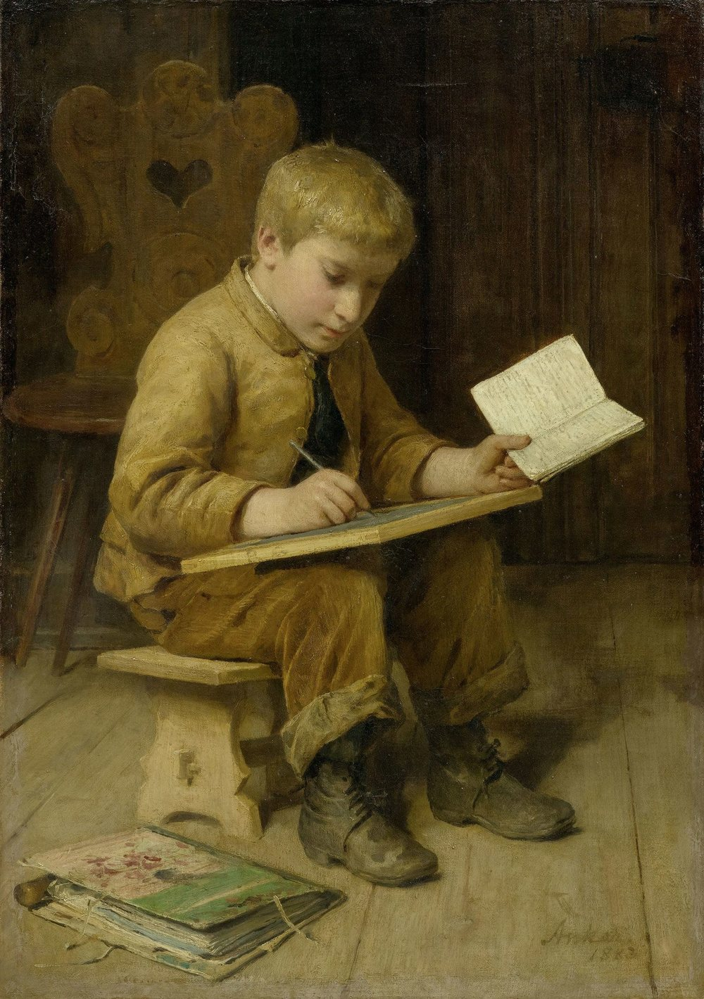

Méthodologie · Français
Préparer aux examens en français
Brevet, CAP, bac professionnel, bac de français : les ressources de français pour préparer chaque examen, réunies en un seul endroit.

Brevet (DNB)
Diplôme national du brevet : l’écrit de français, sur 100 points ramenés sur 20 (texte 50 points, dictée 10 points, rédaction 40 points), et l’oral de soutenance.
-
Le panneau « Préparer le brevet de français, capacité par capacité » : grammaire et réécriture, compréhension et interprétation, dictée, rédaction, avec méthode, modèle, checklist, entraînements notés, brevet blanc et oral blanc de soutenance.
-
Français 3e : toute l’année et préparation complète au DNB 2026
L’année entière, jusqu’à la séquence « Rêver la science, préparer le brevet » : méthode de l’épreuve, oral de soutenance et brevet blanc.
-
Français 4e : toute l’année, avec préparation au brevet
Les capacités du brevet travaillées dès la 4e, séquence après séquence.
CAP
En lycée professionnel et en CFA : l’écrit et l’oral de français, en contrôle en cours de formation ou en épreuve ponctuelle.
-
L’écrit de deux heures et l’oral de dix minutes, avec sujets corrigés.
-
Deux façons d’être évalué, selon l’habilitation du CFA : ce qui change pour l’apprenti.
-
Prendre la parole devant un jury : se présenter, parler de son métier, répondre aux questions.
Bac professionnel
L’épreuve écrite de français, l’oral et la culture à mobiliser.
-
Vade-mecum de culture pour le bac pro de français
Les repères de culture à mobiliser le jour de l’épreuve.
-
Les épreuves de français du bac pro, expliquées pour l’apprenti.
-
Méthode de l’oral d’examen, Terminale
Séance d’accompagnement personnalisé : prise de notes, plan, prise de parole.
Bac de français
Épreuve anticipée de français, en Première, voies générale et technologique : l’écrit, puis l’oral.
L’écrit
-
Dissertation et essai : les épreuves du bac en marche
Huit séances pour construire une réponse personnelle : dissertation pour la voie générale, contraction et essai pour la voie technologique.
-
Rimbaud, Cahier de Douai : et si la dissertation tombe sur Rimbaud ?
La séquence sur « Partir à seize ans », avec sa fiche de dissertation.
-
S’approprier des textes, préparer l’épreuve
Lire, annoter, retenir : les textes au service de l’épreuve.
L’oral
-
L’oral du bac de français : présenter une œuvre et dialoguer
Huit séances : explication linéaire, question de grammaire, présentation d’une œuvre et entretien, avec oral blanc et grilles renseignées.
-
La question de grammaire au bac
Méthode, exemples tirés des œuvres au programme, exercices et corrigés.
Conçu par Madame Carole Paoli Pompougnac